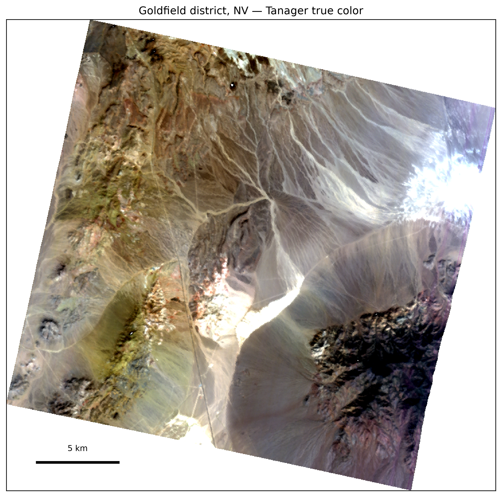
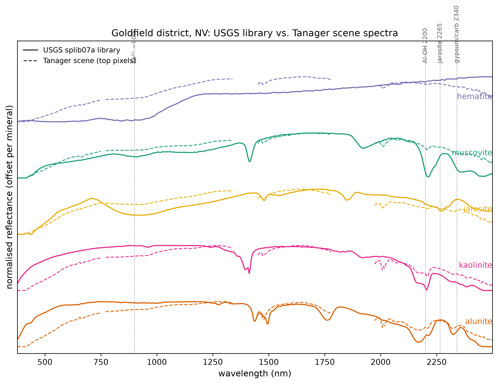
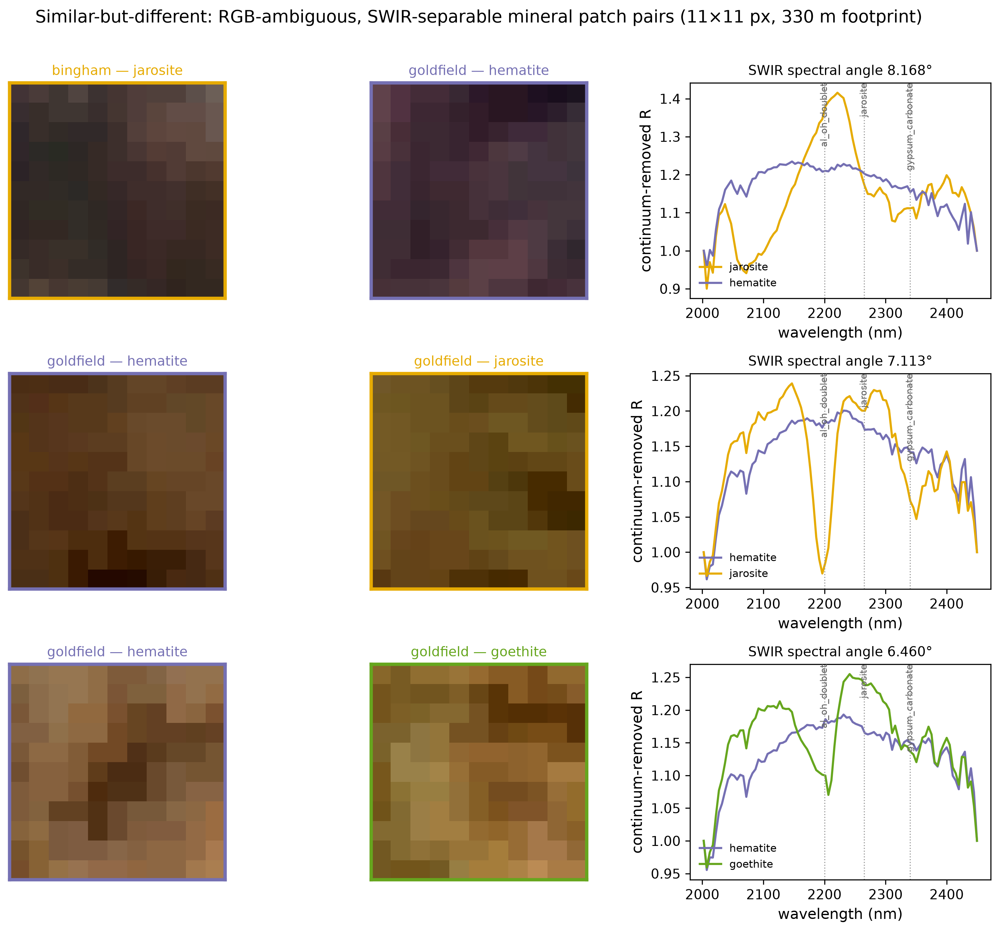
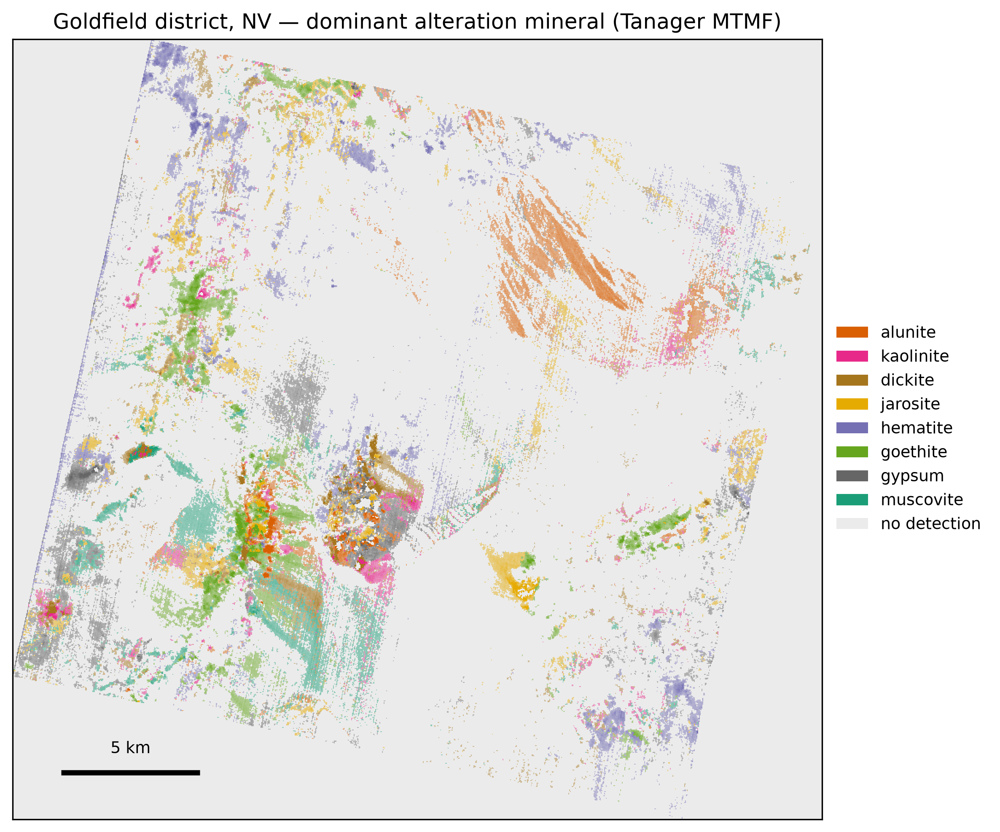
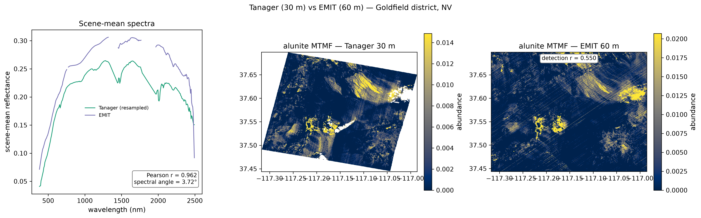

Tanager VSWIR reveals mine-waste and alteration minerals that broadband satellites miss
What can Tanager's 426-band spectra tell us about mine waste that broadband satellite imagery cannot? We test whether Tanager preserves diagnostic mineral signatures that Sentinel-2 blurs, and whether those signatures can help identify mine waste showing evidence of acidic oxidative weathering.
Why this matters
Tanager measures hundreds of contiguous wavelengths across the visible and shortwave infrared (VSWIR). Many minerals have narrow absorption features in this part of the spectrum, so those measurements can distinguish materials that look similar in ordinary satellite imagery.
Here we use measured USGS mineral spectra to identify alteration and mine-waste minerals at Goldfield, Nevada, and Bingham Canyon, Utah. Every map class is a named mineral matched to a measured library spectrum — material identification in the same sense a spectroscopist would use the term. We then ask three questions: Do those mineral signatures survive in real Tanager imagery? How much information would be lost with Sentinel-2's broader bands? And can the resulting mineral maps help identify mine waste that deserves closer investigation?
The result is a reproducible screening method. It does not replace field spectroscopy or geochemical sampling; it helps identify where those measurements may be most useful. This type of screening could be useful to geological surveys and land-management agencies (USGS, BLM, EPA) evaluating large mining districts where field sampling everywhere is impractical.
1Two test sites
We test the approach at two well-studied mining districts in the western United States.
Goldfield, Nevada is a classic acid-sulfate hydrothermal system — one altered by hot, sulfuric-acid-bearing fluids — adjacent to the Cuprite spectral benchmark, giving unusually good independent information about its alteration mineralogy.
Bingham Canyon, Utah is a large porphyry-copper mine surrounded by extensive mine waste and tailings. It provides a practical test of whether surface mineralogy can help identify areas with greater potential for acid generation.


2The minerals leave a fingerprint
Minerals can be identified spectrally because their chemistry produces absorption features at characteristic wavelengths. We anchor every mineral class in this analysis to a measured reference spectrum (an "endmember") from version 7 of the USGS spectral library (splib07a; Kokaly et al. 2017); no mineral spectra are synthesized.
The features that matter here include the aluminum-hydroxyl (Al-OH) absorption near 2200 nm, jarosite near 2265 nm, gypsum and carbonate features near 2340 nm, and ferric-iron absorption in the visible and near infrared.
Most importantly, these features appear not only in the laboratory spectra but also in the Tanager pixels identified as those minerals.

3The 2200 nm test: Tanager vs Sentinel-2
The advantage of contiguous spectral sampling is easiest to see around 2200 nm. Alunite and kaolinite have different absorption shapes here, allowing the two minerals — and the alteration environments they represent — to be distinguished spectrally.
We took the measured mineral spectra and deliberately degraded them to Sentinel-2's spectral resolution using the published Sentinel-2 response functions. Their spectral-angle separation — the angle between two spectra treated as vectors — falls from 5.1° to 2.6°, a 50% loss. Sentinel-2 band 12 spans most of the diagnostic structure that separates the two minerals.
This is not a demonstration that hyperspectral data always outperform multispectral data. The jarosite–goethite contrast in the visible and near infrared survives the same degradation much better. The information loss is greatest where the diagnostic mineral structure falls within a broad satellite band.

4Similar in RGB, separable in SWIR
Some surfaces that look nearly identical in visible imagery have very different shortwave-infrared spectra. We tested whether that happens systematically in these scenes.
We divided the images into non-overlapping 11×11-pixel patches and searched mechanically for pairs that looked unusually similar in RGB but had different mineral labels. Among 268 sufficiently pure patches (at least 70% one mineral label), 415 cross-mineral pairs were unusually similar in RGB. Eighteen of those pairs were more different in the SWIR than 95% of same-mineral pairs.
The examples below are the strongest cases selected by that procedure, not hand-picked examples. Their visible images are difficult to distinguish, while their SWIR spectra are clearly different. The mineral labels come from our own mapping pipeline, so this experiment demonstrates additional spectral discrimination, not independent mineral-identification accuracy.

5Mapping the alteration
We next use those spectral fingerprints to map minerals across the scene.
A mixture-tuned matched filter (MTMF) asks how strongly each pixel resembles a measured mineral spectrum relative to the spectral background of that scene. An additional infeasibility score suppresses matches that are spectrally implausible.
At Goldfield, the resulting map recovers major features of the known alteration system, including a muscovite-rich core and an alunite-rich center and lineament near Cuprite. Agreement is weaker for kaolinite and iron oxides. Rather than adjusting the method to improve those cases, we evaluate the disagreement explicitly against the independent alteration map in the next section.

Interactive: pan and zoom the Goldfield mineral classes over satellite imagery; toggle the overlay at top-right.
6How the maps compare with USGS alteration mapping
Goldfield provides an independent check because USGS previously mapped alteration in the district using ASTER data (Rockwell & Bonham 2017). That product was not used to calibrate our Tanager analysis.
Agreement is strongest for the Al-OH and gypsum-carbonate spectral indices, which each reach a rank AUC of 0.78 (1 would be perfect ranking; 0.5 is chance). The alunite and muscovite MTMF maps each reach 0.70.
Iron oxides and kaolinite agree less well. Some of this reflects differences between the mineral classes used here and the broader categories in the published map. We report those disagreements rather than tuning the Tanager classifications to reproduce the reference map.
These are comparisons between two remote-sensing products, not field validation. Spatially blocked estimates are also reported so that neighboring pixels are not treated as independent observations.

7Do we get similar results with another hyperspectral sensor?
We also ran the same mineral-mapping pipeline on an overlapping observation from NASA's EMIT imaging spectrometer.
The overall spectra agree closely: mean scene reflectance has r = 0.962 across 240 shared wavelengths, with a spectral angle of 3.72°. More importantly, all six target-mineral maps are positively correlated between the two sensors, from r = +0.335 for muscovite to +0.584 for jarosite. The agreement is moderate rather than exact, which is reasonable given the different acquisition dates, atmospheric corrections, and spatial grids.
This is a cross-sensor consistency test, not independent validation: both analyses use the same code and mineral endmembers. Tanager's delivered 30 m pixels cover roughly one-quarter the area of EMIT's ~60 m pixels; we compare the delivered products, not native instrument footprints.

8Can the mineral maps help screen mine waste?
Acid-generating mine waste leaves mineralogical clues at the surface. Jarosite forms under acidic, oxidizing, sulfate-rich conditions and provides a strong mineralogical indicator of acidic oxidative weathering. Iron oxyhydroxides are generally associated with oxidation under less acidic conditions, and gypsum without the acidic iron phases is more consistent with a comparatively buffered setting (Swayze et al. 2000).
We use those mineral indicators to assign each pixel an ordinal screening tier — a surface-mineralogical proxy for acidic mine-waste conditions. The tiers rank mineralogical evidence for acidic conditions within the scene; they are not estimates of acid-generating capacity, pH, or acid flux.
At Bingham Canyon, many of the pixels with the strongest mineralogical indicators of acidic conditions occur around the open pit and tailings areas.

Interactive: the mineral-indicator screening tiers over the Bingham pit and tailings; toggle the overlay at top-right.
Operational pathway
Tanager imagery → quality and atmospheric screening → mineral identification → candidate zones → field targets → spectroscopy and geochemical sampling
The purpose is to decide where to investigate, not to replace field measurements.
9What this cannot tell us
- Features smaller than a pixel: Tanager's delivered products have 30 m pixels, so small or narrow mine-waste features may be mixed with surrounding materials.
- What lies below the surface: VSWIR spectroscopy measures surface mineralogy. It does not measure bulk composition or subsurface conditions.
- Field-verified mineral abundance: The independent comparison is against another remote-sensing alteration product, not field samples. It tests agreement at the alteration-group level, not absolute mineral abundance.
- Validated acid-generation risk: The Bingham mine-waste acidity screening proxy is a relative spectral screening layer. It has not been validated against field geochemistry, and the regional reference data contain too little overlapping jarosite to provide that test.
10Reproduce the analysis
The analysis is packaged as a command-line workflow. From a clone of the repository, after uv sync and the documented data downloads, each stage is one command:
uv run tanager-minmap hero --site goldfield --output out/
The repository contains the seven-stage tanager-minmap pipeline and reproduction instructions in REPRODUCIBILITY.md. The code and its shared data layer are public; the archival deposit of the derivative maps is the one release step still open.